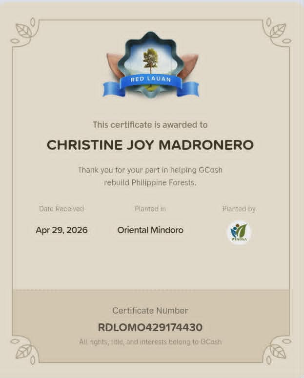
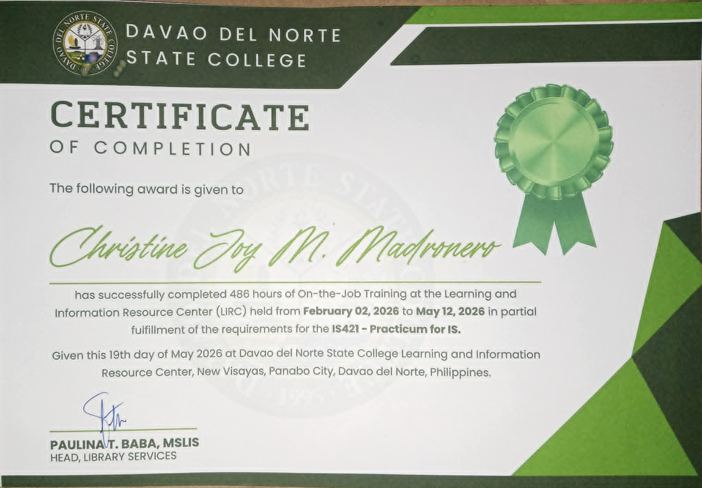
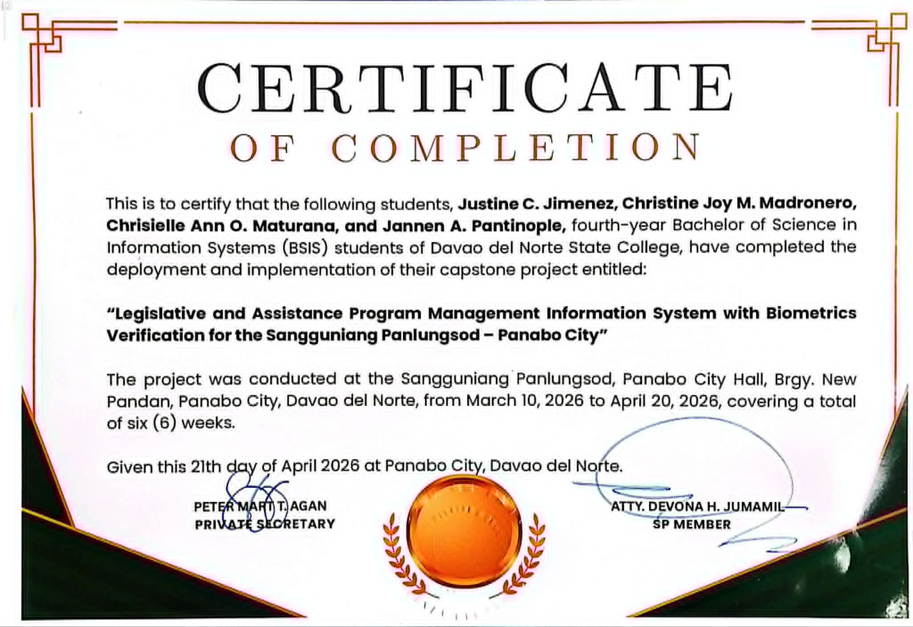

Achievements & Certificates

Gcash Rebuild Philippine Forests.

Certificate of Completion

Certificate of Completion

Python Essentials 1

Hello! I'm Christine Joy M. Madronero, a Bachelor of Science in Information Systems (BSIS) student with a strong interest in technology, organization, and continuous learning. I enjoy exploring how information systems can be used to improve processes and solve real-world problems. As a student, I am always eager to gain new knowledge, develop my skills, and take on opportunities that help me grow both personally and professionally.
Work with meI am a Bachelor of Science in Information Systems (BSIS) student at Davao del Norte State College with a passion for technology, creativity, and continuous learning. I enjoy working on system development, research, and digital design projects that solve real-world problems and enhance user experience. Through my academic and internship experiences, I have developed skills in communication, teamwork, organization, and problem-solving. I am committed to growing as an Information Systems professional and using technology to create meaningful and innovative solutions.
A web-based information system developed to manage legislative records and assistance program applications for the Sangguniang Panlungsod of Panabo City. The system incorporates biometric verification for secure beneficiary identification, improves record management, streamlines application processing, and supports efficient reporting and monitoring of assistance programs.



Library Intern / Office Assistant Duration: 486 Hours
Assisted in organizing records and documents
Helped students and visitors
Encode and managed files
Supported daily office operations
BS Information Systems (BSIS) 4th Year | Graduation: June 26, 2026